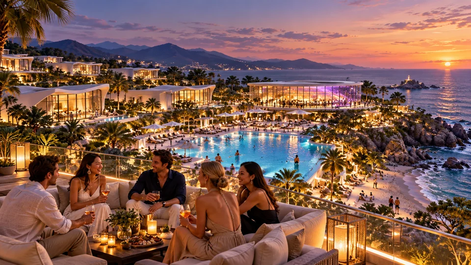
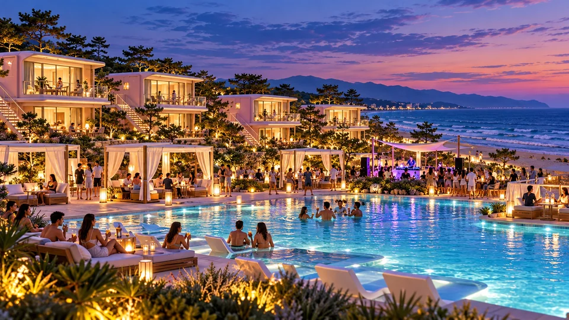
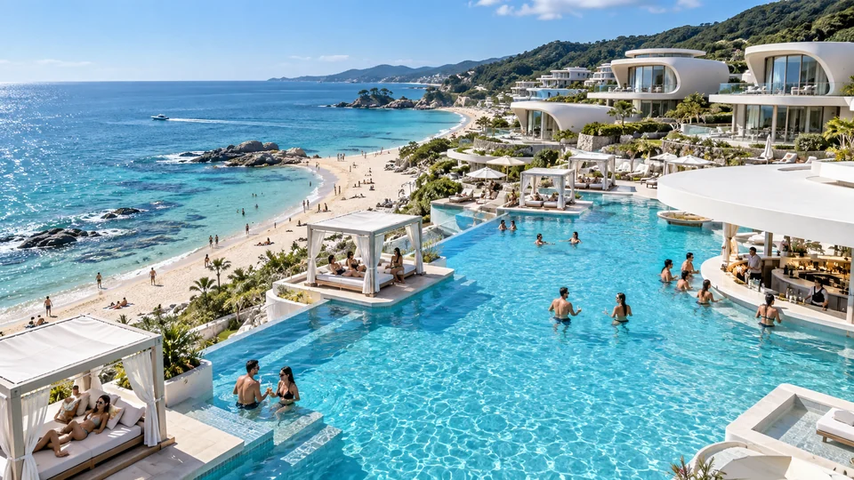
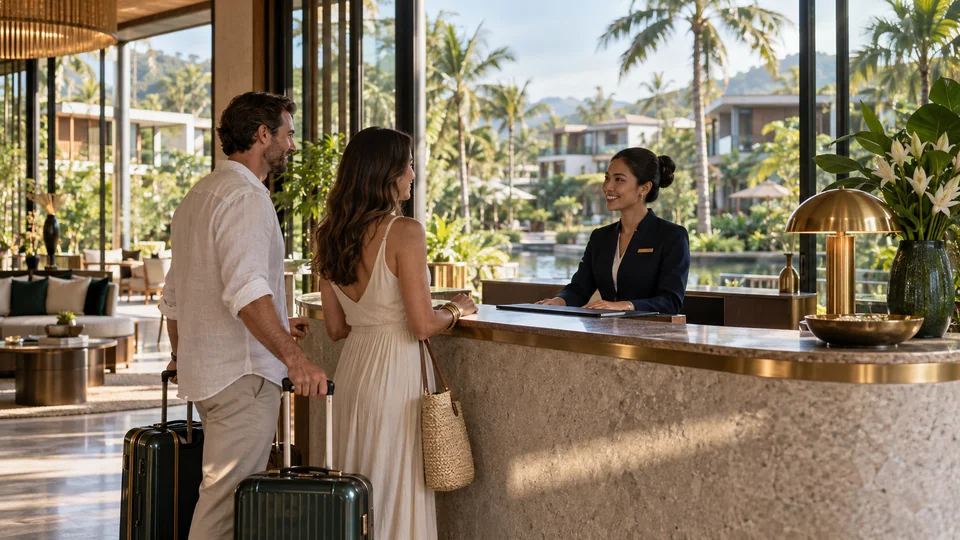

01 / TWO WAYS TO STAY
마이롯지의 국내 파크 소개.
바다를 마주한 주문진의 만남. 풀장 곁 양양의 하루. 서로 다른 휴가의 풍경을 만나보세요.

이미지는 AI 공간 콘셉트입니다. 실제 위치·시설·설계·일정은 확인 후 안내합니다.
02 / JUMUNJIN PARK
마이롯지 주문진 파크.
바다를 향한 별장, 음악과 만남이 빛나는 휴가.

02 / SIGNATURE SCENES
주문진에서 만나는 특별함.

바다를 곁에. 나만의 별장.
창밖으로 이어지는 바다. 그 풍경 속에서 누리는 나만의 여유.

빛나는 풀파티.
음악과 만남의 풀파티. 카바나에서의 느긋한 휴식.

풍경과 만남이 있는 테라스.
바다를 바라보는 테라스. 함께 앉아 대화하고, 새로운 친구를 만나다.
03 / FACILITIES
시설 둘러보기.
마이롯지 파크가 지향하는 공용 시설 콘셉트. 각 파크의 확정 시설을 촬영한 사진은 아닙니다.

비치사이드 · 풀장
바다의 풍경과 물가의 여유.
풀파티 · 카바나
함께 즐기는 음악. 카바나에서의 휴식.

카페테리아 · 클럽
낮의 대화에서 빛나는 밤까지.
테라스
바다를 보며 함께 보내는 시간.

마켓
휴가의 일상에 가까운 편의 공간.

컨시어지
도착부터 편안한 휴가를 위한 안내.
03 / YANGYANG PARK
마이롯지 양양 파크.
복층 별장과 풀파티, 함께 즐기는 바다의 저녁.


02 / SIGNATURE SCENES
양양에서 만나는 특별함.

나만의 별장. 여유로운 테라스.
실내에서 프라이빗 테라스까지. 쉬고, 이야기하고, 내 속도로 보내는 하루.

빛나는 풀파티. 느긋한 카바나.
음악과 만남의 풀파티. 카바나에서의 느긋한 휴식.

반가운 도착. 가벼운 휴가.
가까운 마켓과 세심한 안내. 도착하는 순간부터 편안한 휴가.
03 / FACILITIES
시설 둘러보기.
마이롯지 파크가 지향하는 공용 시설 콘셉트. 각 파크의 확정 시설을 촬영한 사진은 아닙니다.
비치사이드 · 풀장
바다의 풍경과 물가의 여유.
풀파티 · 카바나
함께 즐기는 음악. 카바나에서의 휴식.
카페테리아 · 클럽
낮의 대화에서 빛나는 밤까지.
테라스
바다를 보며 함께 보내는 시간.
마켓
휴가의 일상에 가까운 편의 공간.
컨시어지
도착부터 편안한 휴가를 위한 안내.